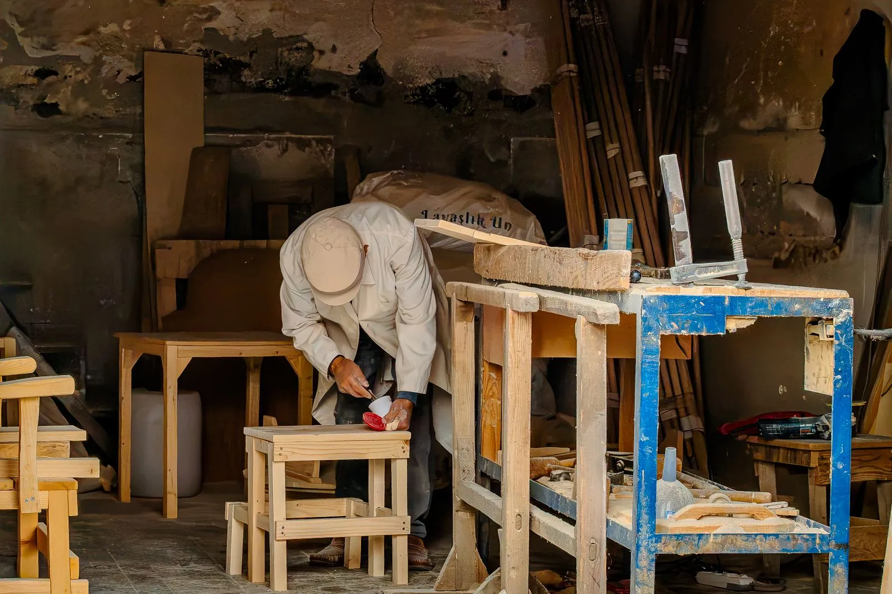
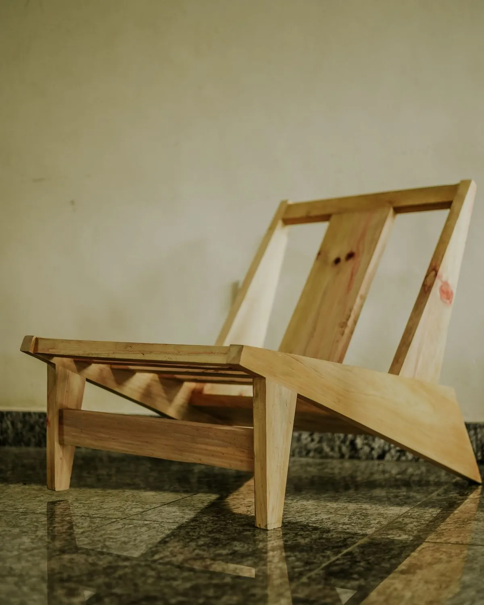

Home / Craft
Our craft
Ten carpenters, one finisher and a workshop in Chiniot. This is how every piece is made.

chiniot
Why we started
Most furniture is built to be replaced. We wanted to make the opposite: a small set of pieces, in honest wood, that a family keeps for forty years.
15Pieces, nothing else
10Carpenters
1,200+Homes furnished
0Particle board
The four woods
Pick the wood, we do the rest.
Every piece is made in all four. Ask for a free swatch box to hold them first.
From board to your room
Six steps, all by hand.
- 01Choose the boardsOur ustad picks boards for your piece by grain, so the pattern flows across the top.
- 02Dry and restWood rests in the workshop for two weeks so it settles to Pakistani humidity and doesn't crack later.
- 03Cut and joinMortise and tenon, dovetails, dowels. Glue and wood, no metal brackets.
- 04Sand three times120, 180, then 240 grit, by hand on every edge you will touch.
- 05Oil and cureTwo coats of hard-wax oil. Food safe, easy to repair, never plastic-looking.
- 06Wrap and deliverBlanket-wrapped, no foam. Our team brings it in and takes the packaging away.


Visit
Come and sit on them.
Our Gulberg showroom has every piece in all four woods. Tea is on us.
Plan a visit →